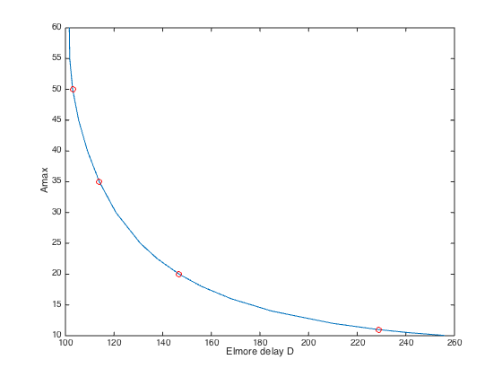
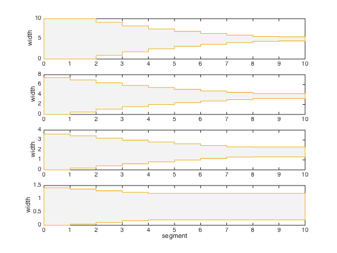

% Boyd, "Problems in VLSI design" (Lecture) % Written for CVX by Almir Mutapcic 02/08/06 % % We consider the problem of finding optimal width profile % for a straight wire segmented into N parts. We want to % minimize the Elmore delay, subject to limits on wire width % and the total area. We use a pi-model for each wire segment. % Problem can be formulated as GP: % % minimize D % s.t. w_min <= w <= w_max % area <= Amax % % where variables are widths w (and arrival times T that are used % to formulate the overall delay D expression). % % Important: We label root node as 1, and all the other nodes as % node_label_in_the_paper + 1 (due to Matlab's convention). % Also label nodes with increasing numbers downstream. %******************************************************************** % user supplied data (problem constants and tree topology) %******************************************************************** N = 10+1; % number of segments (including the root node which is labeled as 1) % parent node array for the straight wire % specifies which node is a unique parent for node i (always have a tree) parent = [0:N-1]; % problem constants Rsource = 0.1; l = 1*ones(N-1,1); alpha = 1*ones(N-1,1); beta = 1*ones(N-1,1); gamma = 1*ones(N-1,1); % load capacitance at each node Cload = [0; ones(N-1,1)]; % minimum and maximum width and area specification Wmin = 1; Wmax = 10; Amax = 50; %******************************************************************** % derived data (computed from user's data) %******************************************************************** % compute children cell array (evaluate who are children for each node) children = cell(N,1); leafs = []; for node = [1:N] children{node} = find(parent == node); if isempty(children{node}) leafs(end+1) = node; % leafs have no children end end %******************************************************************** % optimization %******************************************************************** disp('Generating the tradeoff curve...') Darray = []; widths = []; for Amax = [10.05 10.5 11 12:2:20 22.5 25:5:60] fprintf( 'Amax = %5.2f: ', Amax ); cvx_begin gp quiet % optimization variables variable w(N-1) % wire width variable T(N) % arrival time (Elmore delay to node i) % objective is the critical Elmore delay minimize( max( T(leafs) ) ) subject to % wire segment resistance is inversely proportional to widths R = alpha.*l./w; R = [Rsource; R]; % wire segment capacitance is an affine function of widths C_bar = beta.*l.*w + gamma.*l; C_bar = [0; C_bar]; % compute common capacitances for each node (C_tilde in GP tutorial) C_tilde = cvx( zeros(N,1) ); for node = [1:N] C_tilde(node,1) = Cload(node); for k = parent(node) if k > 0; C_tilde(node,1) = C_tilde(node,1) + C_bar(k); end; end for k = children{node} C_tilde(node,1) = C_tilde(node,1) + C_bar(k); end end % now compute total downstream capacitances C_total = C_tilde; for node = N:-1:1 for k = children{node} C_total(node,1) = C_total(node,1) + C_total(k,1); end end % generate Elmore delay constraints R(1)*C_total(1) <= T(1,1); for node = 2:N R(node)*C_total(node) + T(parent(node),1) <= T(node,1); end % collect all the constraints sum(w.*l) <= Amax; Wmin <= w <= Wmax; cvx_end % display and store computed values fprintf('delay = %3.2f\n',cvx_optval); Darray = [Darray cvx_optval]; widths = [widths w]; end % indices of four taper designs on the tradeoff curve Amax = [10.05 10.5 11 12:2:20 22.5 25:5:60]; A11ind = find(Amax == 11); A20ind = find(Amax == 20); A35ind = find(Amax == 35); A50ind = find(Amax == 50); % plot the tradeoff curve figure, clf plot(Darray,Amax, ... Darray(A11ind),Amax(A11ind),'ro',... Darray(A20ind),Amax(A20ind),'ro',... Darray(A35ind),Amax(A35ind),'ro',... Darray(A50ind),Amax(A50ind),'ro'); xlabel('Elmore delay D'); ylabel('Amax'); disp('Optimal tradeoff curve plotted.') % plot four taper designs figure, clf w1 = widths(:,A50ind); w2 = widths(:,A35ind); w3 = widths(:,A20ind); w4 = widths(:,A11ind); plot_four_tapers(w1,w2,w3,w4);
Generating the tradeoff curve... Amax = 10.05: delay = 255.72 Amax = 10.50: delay = 241.04 Amax = 11.00: delay = 228.67 Amax = 12.00: delay = 209.98 Amax = 14.00: delay = 184.90 Amax = 16.00: delay = 168.19 Amax = 18.00: delay = 156.01 Amax = 20.00: delay = 146.74 Amax = 22.50: delay = 137.78 Amax = 25.00: delay = 130.82 Amax = 30.00: delay = 120.77 Amax = 35.00: delay = 113.95 Amax = 40.00: delay = 109.06 Amax = 45.00: delay = 105.43 Amax = 50.00: delay = 102.96 Amax = 55.00: delay = 101.76 Amax = 60.00: delay = 101.60 Optimal tradeoff curve plotted.
 